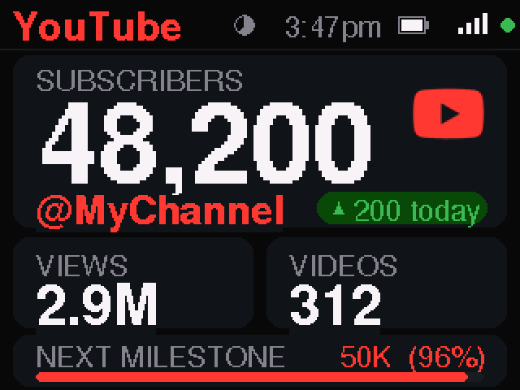
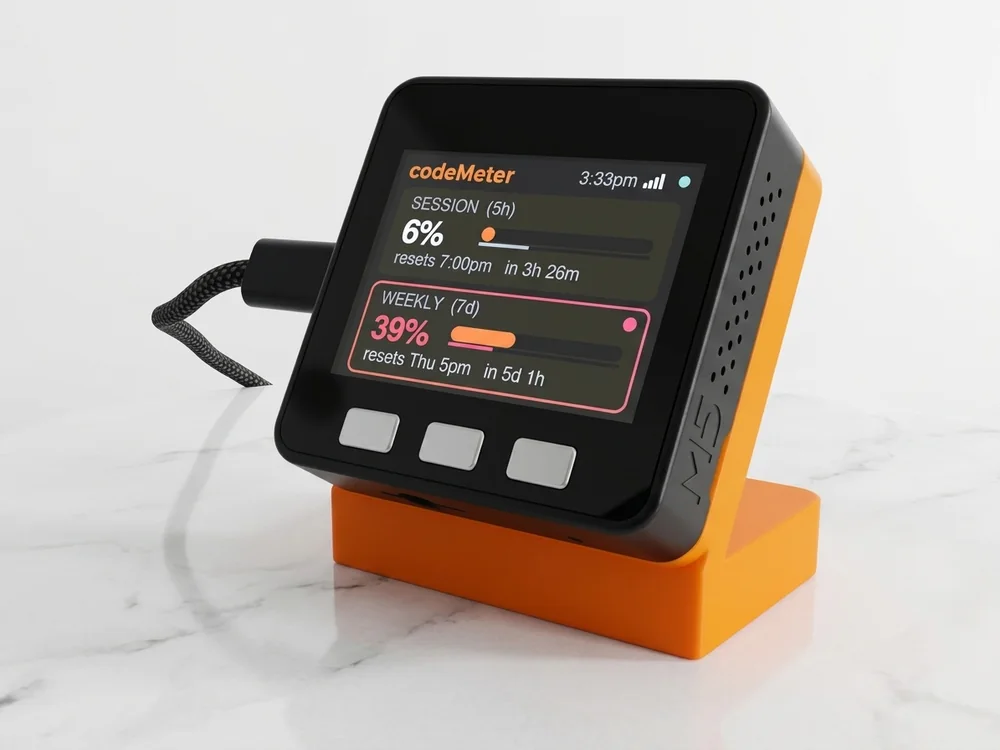
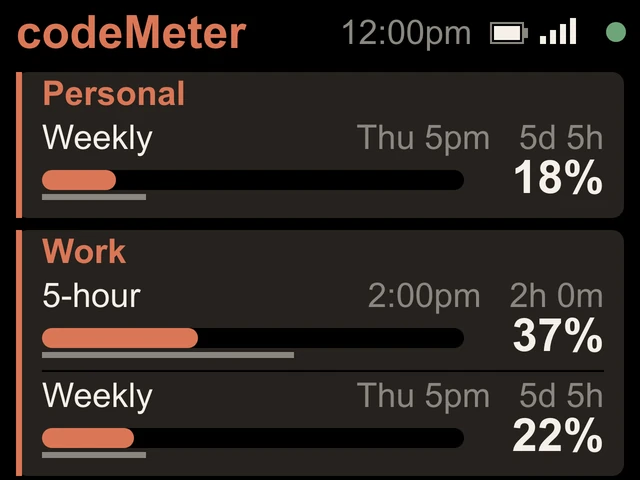
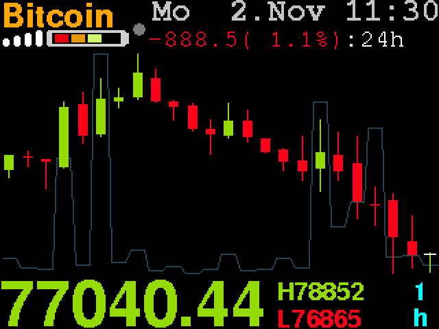
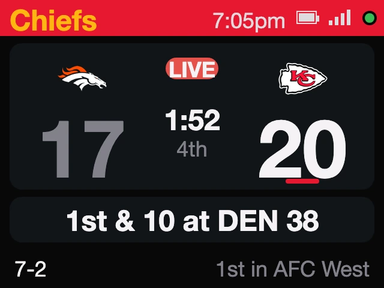

For YouTube, Twitch, GitHub and 17 more
Your follower count,
on your desk.
A small display that shows your live count and what today added. Every minute. No app, no phone.

In use
Your count, while you create.
It sits by the mic and keeps counting while you work on the next one.
How it works
Watch it grow.
One number, all day.
- Your numberSubscribers, followers, viewers or sales, for the account you pick.
- What today addedThe gain since the day's first reading. Viewer and player counts leave it out.
- The next milestoneA bar to the next round number, like 50K or 1M.
Setups
One device. 20 platforms.
Pick one on your phone during setup. Change it any time.


Find your platform: All 20 platforms YouTubers Streamers Developers Shop owners
Try it
See your count.
Pick a platform. Seven load your real number right here, the way the device reads it. The rest show a sample screen.
Updates
It keeps adding platforms.
We add platforms and fixes, and socialMeter installs them over Wi-Fi by itself.
Eight new platforms, including Kick, Roblox and Minecraft.
Every socialMeter updates itself to offer them.
8 free updates. No subscription.
Build yours
Make it yours.
Stands are 3D-printed to order in Encinitas, California.
$119
Buy nowIncludes the stand, a USB-C cable and a setup card. Checkout at encinitas3d.com.
Gifts
A gift they will look at every day.
Their own number, live on their desk. Ordering several for a team or an event? Ask us.
Ask about a custom order
Getting started
Set up in a few minutes.
- 1Plug it in
Scan the code on its screen to join its Wi-Fi. The setup page opens.
- 2Fill in one page
Your home Wi-Fi, what to count, and your handle.
- 3Add a key if asked
11 of the 20 platforms need only a name. The rest take a free key, and the guide shows how.
Your handle and key stay on the device. No account with us, no app, nothing left running on your computer. Setup guide
FAQ
Questions
Which platforms does it work with?
20: YouTube, YouTube Live, Twitch, Kick, Bluesky, Mastodon, Telegram, Spotify, Last.fm, GitHub, npm, Docker Hub, Discord, Discourse, Steam, Roblox, Minecraft servers, Wikipedia, Etsy and Shopify. Instagram, TikTok and X are not supported, because they do not let a device like this read the count. What it shows for each platform
How often does it update?
Every 60 seconds. GitHub without a token checks every 2 minutes to stay inside GitHub's limit. YouTube rounds subscriber counts itself, so that number moves in steps.
What do the circle and the dot at the top mean?
The small circle empties until the next check, so you can see when the number will move. The dot is green while the number is live, amber while it shows the last number it read, and red when something needs a look, like a handle it cannot find.
Do I need an API key or a login?
Usually not. 11 platforms need only a name, like a handle or a server address. YouTube, YouTube Live, Twitch, Kick, Spotify, Telegram, Last.fm, Etsy and Shopify need a free key you make once; it never asks for your password.
Does it read anything private?
No. It reads public counts. Etsy and Shopify are the exception: those are your own shop's numbers, read with your own key, which stays on the device.
Can it show more than one account?
One account at a time. To switch, hold the middle button for about seven seconds and pick again on your phone. Your Wi-Fi is kept.
What does "today" mean?
The gain since the day's first reading, in your time zone. Live viewer and player counts leave it out, because they rise and fall all day.
Is there a subscription?
No. Updates are free and install themselves over Wi-Fi. If an update ever fails to start, it rolls back to the previous version.
What do I need, and what are the specs?
2.4 GHz Wi-Fi with a WPA2 password. It has a 2-inch 320 by 240 colour screen, an ESP32, three buttons, and USB-C power or a built-in battery.
myDeskMeter
Same device, other numbers.


codeMeter
How much of your AI coding limits you have used, and when they reset.
From $119

priceMeter
Live prices and candlestick charts for up to 25 stocks and crypto.
From $119


sportsMeter
Your teams' record, next game and live score, up to six at once.
From $119